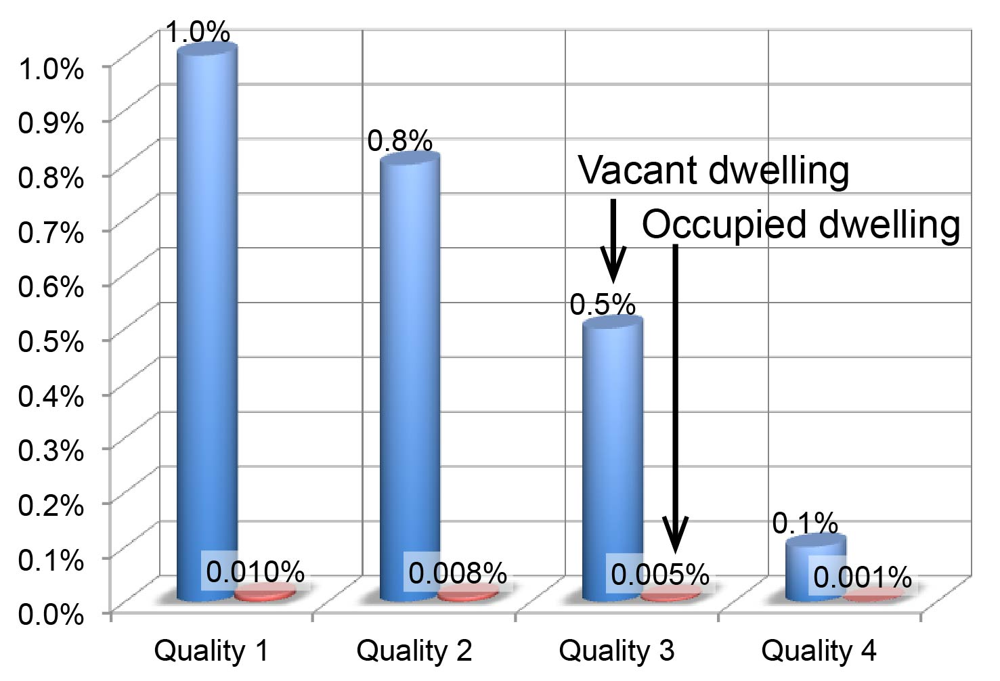

The real estate module updates dwellings. Based on current demand for housing by different dwelling types, developer decide to build, renovate or demolish dwellings. Some dwellings deteriorate every simulation period as well. Four different events are simulated:
Every simulation period, developers assess current demand by dwelling type and region. If demand is high (expressed by a low vacancy rate), developers will search for available land that is zoned for residential development and build the dwelling type in demand. To find the best locations for new dwellings, developers mimik the location choice behavior of households, and thereby, developers are likely to build the most marketable new dwellings.
Dwellings developed in one simulation period are released into the housing market not before the following simulation period (usually 1 year later). This reflects the delay due to planning, obtaining building permissions and construction. The following simulation period, demand may have shifted by some degree, representing the tendency for developers to be slightly behind the current housing demand.
Each dwelling has the attibute "Quality" representing the condition of the appartment. Quality is defined as 1, 2, 3 or 4, with 1 being poor quality and 4 being the highest quality. The table below provides the guesstimated probabilities for a dwelling to be renovated or deteriorate. The first row, for example, provides the probabilities for a dwelling with the quality rating 1. This dwelling can remain unchanged (93%), improve from 1 to 2 (5%) or improve from 1 to 3 (2%). It is assumed that dwellings cannot change from quality 1 to quality 4 in a single year.
| Deteriorate 2 | Deteriorate 1 | Unchanged | Improve 1 | Improve 2 | |
|---|---|---|---|---|---|
| Current quality 1 | 0.93 | 0.05 | 0.02 | ||
| Current quality 2 | 0.1 | 0.75 | 0.10 | 0.05 | |
| Current quality 3 | 0.05 | 0.10 | 0.75 | 0.10 | |
| Current quality 4 | 0.02 | 0.05 | 0.93 |
In addition to this rather random up- and downgrading of dwellings, the model assumes that the share of dwellings by quality rating remains unchanged over time. If there is an increased share of high-quality dwellings, the probabiltities for deterioration are slightly increased to keep the share of all quality classes more or less constant over time.
Since new dwellings are always released into the market at quality 4, the total housing stock would improve continuously. However, quality is not an absolute measurement but rather a quality assessment in comparison to all other dwellings. If the overall quality of dwellings improve, the expectations of households are likely to increase proportionally. By keeping the share of all quality classes constant over time, quality remains a distinguishable dwelling attribute used in household relocation decisions.
A few dwellings are demolished every simulation period. As shown in the bar chart on the right, demolition probabilitites are very and and dwellings of lower quality are much more likely to be demolished than higher-quality dwelling.
Furthermore, most dwellings demolished are vancant dwellings. The model recognized that most dwellings that are currently occupied are unlikely to be demolished. Should an occupied dwelling be selected for demolition, the household living in this dwelling needs to find an alternative housing location immidately. The new dwelling is chosen by the household relocation module.
A hedonic price model updated costs for dwellings based on current demand (as expressed by the vacancy rate). For each dwelling type, vacancy rates in each neighborhood are calculated. If vacancy rates are above the average, prices slightly decline. If vacancy rates are below average, landlords assume to have a market for increasing rents (or land prices) and quickly adjust prices upwards. Price increases are assumed to happen quickly, while price reductions are slow. This reflects observed behavior that landlord attempt to keep prices high, even if demand is rather low.

Developers decide to invest in new housing if demand suggests such investments will be profitable.